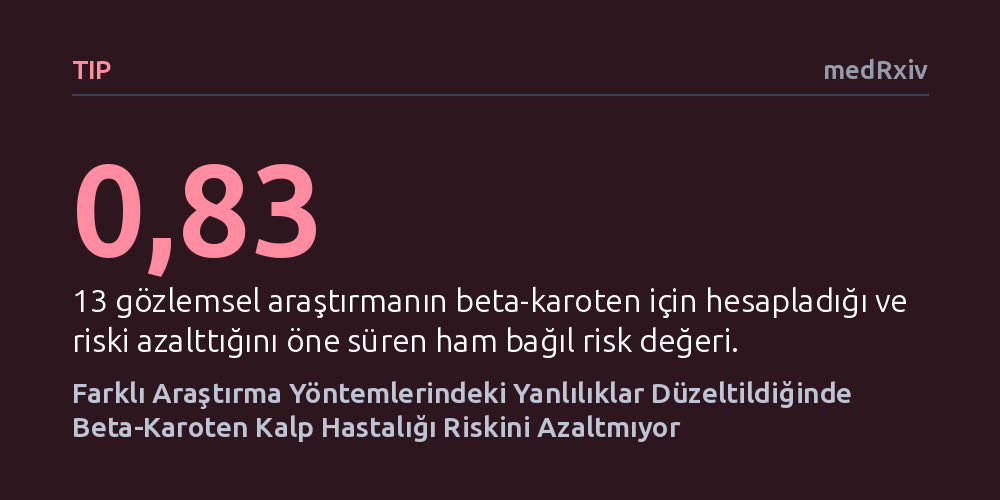

TIP · medRxiv · 2026-10-25
Araştırmacılar, farklı araştırma modellerindeki yanılgı paylarını matematiksel olarak eşitleyen yeni bir yöntem geliştirerek beta-karotenin kalp sağlığına etkisini inceledi. Yanlılıklar dengelendiğinde, gözlemsel verilerin iddia ettiğinin aksine beta-karoten tüketiminin kalp hastalığı riskini düşürmediği belirlendi.
Sağlık haberlerindeki çelişkili besin takviyesi iddialarının ardındaki yöntemsel yanılgıları gidererek hangi takviyelerin sahiden koruyucu olduğunu netleştirmeye imkan tanır.

Beslenme ve sağlık araştırmalarını takip eden herkesin aşina olduğu temel bir kafa karışıklığı vardır: Bir gün havuçta bol bulunan beta-karotenin kalp krizini önlediği öne sürülürken, başka bir gün bu takviyelerin hiçbir koruyucu etkisi olmadığı açıklanır. Bu tür çelişkilerin temelinde, araştırmacıların aynı soruyu tamamen farklı yöntemlerle incelemesi ve her yöntemin kendine has kusurlar barındırması yatar. İnsanların beyanlarına dayanan gözlemsel araştırmalarda, sağlıklı beslenen kişilerin zaten spor yapması veya sigara içmemesi gibi gizli yaşam tarzı faktörlerini ayrıştırmak son derece zordur.
Epidemiyolojide 'üçgenleme' adı verilen yaklaşım, aynı soruya farklı araştırma modelleriyle yaklaşarak gerçeğe ulaşmayı hedefler. Ne var ki bugüne kadar bu yöntem çoğunlukla çalışmaların birbiriyle kabaca uyuşup uyuşmadığını sözel olarak tartışmaktan öteye gidememişti. Bu çalışmayı yürüten araştırmacılar, farklı çalışma türlerinin taşıdığı yanılgı paylarını matematiksel olarak hesaba katan sayısal bir çerçeve kurarak şu temel sorunun peşine düştü: Metodolojik kusurlar giderildiğinde beta-karoten tüketimi kalp hastalığı riskini sahiden düşürüyor mu?
Araştırmacılar, farklı yöntemlerden gelen sonuçları adil biçimde bir araya getirebilmek için iki aşamalı bir niceliksel çerçeve geliştirdi. İlk aşamada, her çalışmanın yanıt aradığı sorunun nihai hedef soruyla ne ölçüde örtüştüğü, yani ilgililik derecesi belirlendi. Örneğin kandaki beta-karoten seviyesini ölçen bir çalışma ile dışarıdan hap olarak verilen dozu inceleyen bir araştırma aynı soruyu cevaplamaz. İkinci aşamada ise her yöntemin doğasından kaynaklanan sistematik hata payları ve yanlılık yönleri matematiksel olarak modellendi.
Bu çerçeveyi test etmek amacıyla tıp literatüründen üç farklı araştırma tasarımı seçildi: En yüksek kanıt düzeyini temsil eden 5 randomize kontrollü klinik deneme, genetik varyasyonları doğal birer deney gibi kullanan 1 Mendel rastgeleleştirmesi çalışması ve insan alışkanlıklarını geriye dönük izleyen 13 gözlemsel regresyon araştırması. Toplam 19 çalışmadan elde edilen veriler, içerdikleri yanlılıklar matematiksel olarak düzeltildikten sonra meta-analiz yöntemiyle tek bir havuzda birleştirildi.
Ham veriler incelendiğinde farklı araştırma türleri arasındaki belirgin uçurum açıkça görülüyordu. İnsanların beslenme alışkanlıklarını izleyen 13 geleneksel gözlemsel çalışma, yüksek beta-karoten alımının koroner kalp hastalığı riskini yüzde 17 oranında azalttığını (bağıl risk 0,83) gösteriyordu. Buna karşılık, insanları rastgele gruplara ayıran 5 klinik deney (bağıl risk 1,00) ile genetik farklılıkları inceleyen Mendel çalışması (bağıl risk 1,02), beta-karoten ile kalp sağlığı arasında hiçbir nedensel bağ bulunmadığına işaret ediyordu.
Araştırmacıların geliştirdiği matematiksel model uygulanıp gözlemsel çalışmaların taşıdığı yaşam tarzı yanlılıkları düzeltildiğinde ise tablo tamamen değişti. Üç farklı araştırma modeli de beta-karoten alımının koroner kalp hastalığı riskini değiştirmediği noktasında uzlaştı (düzeltilmiş bağıl risk 0,99). Benzer sonuçlar genel kalp ve damar hastalıkları için de doğrulandı; yani gözlemsel araştırmalarda görülen faydanın beta-karotenden değil, sağlıklı beslenen bireylerin genel yaşam alışkanlıklarından kaynaklandığı niceliksel olarak kanıtlanmış oldu.
Bu çalışmanın ortaya koyduğu sonuçlar, öncelikle piyasada kalp sağlığı kalkanı gibi pazarlanan beta-karoten takviyelerinin beklenen faydayı sağlamadığını gösteriyor. Sebze ve meyveden zengin beslenen kişilerin kalp damar sağlığının daha iyi olduğu bir gerçektir; fakat bu koruma tek bir molekülden değil, dengeli beslenmenin ve hareketli yaşamın bir bütün olarak getirdiği etkiden doğmaktadır. Dolayısıyla tekil takviyeler alarak kalp krizinden korunmayı beklemek bilimsel bir gerçekliğe dayanmamaktadır.
Çalışmanın asıl büyük katkısı ise tıbbi kanıtların sentezlenmesine yönelik getirdiği yeni araçtır. Gözlemsel araştırmalar ile klinik denemeler çatıştığında çoğunlukla biri göz ardı edilir veya tartışma havada kalır. Farklı çalışma tasarımlarının zayıflıklarını açıkça tanımlayıp sayısal olarak eşitleyen bu yöntem, gelecekte beslenmeden farmakolojiye kadar pek çok alandaki çelişkili bilimsel bulgunun çözüme kavuşturulmasında güvenilir bir kılavuz görevi görebilir.